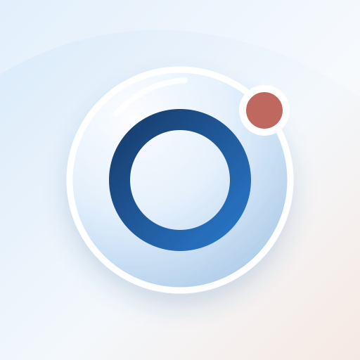

KAMRON APP · КОНЦЕПЦИИВосемь характеров.
8 вариантовВосемь характеров.
Один помощник.
Выбери направление для иконки приложения. Все варианты — векторные SVG.

ВАРИАНТ 01
Орбита
Развитие текущей иконки: стеклянный диск и орбита как знак личного центра.
Нажми на любой вариант ниже, чтобы рассмотреть его крупнее.